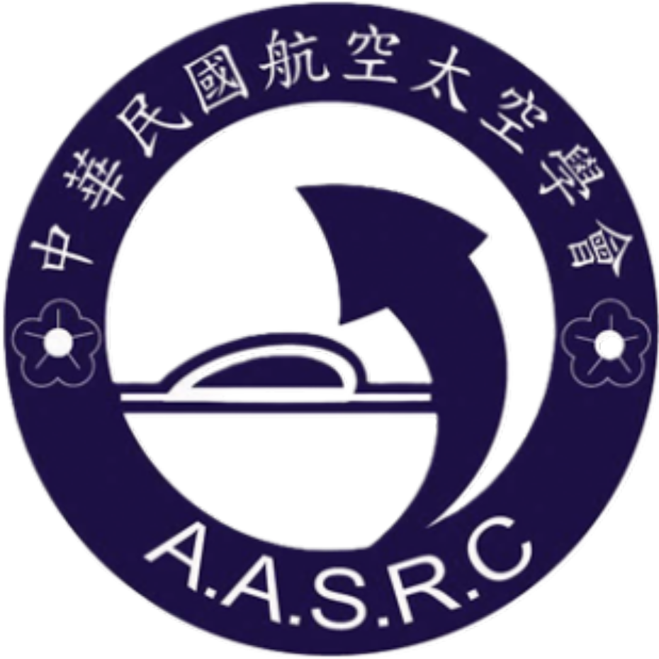

匯聚數值模擬、流體科學與工程創新。正式投稿系統整合帳號管理、摘要與 PDF 投稿、稿件修改、審查及錄取狀態查詢。
會場位於國立海洋生物博物館，鄰近墾丁，兼具學術交流與南國休閒氛圍。
2026/12/11（五）– 2026/12/12（六）
國立海洋生物博物館行政大樓國際會議廳
2026/08/17（一）開放報名及海報摘要上傳
流體力學基本理論、黏性流與非黏性流計算、數值計算法則。
網格點生成法、平行運算、雲端計算與高效能計算（HPC）軟體發展。
航太、機械、先進戰機與艦艇之關鍵流體技術。
其他計算流體力學之應用，例如：能源、電子業、製程等分析。
